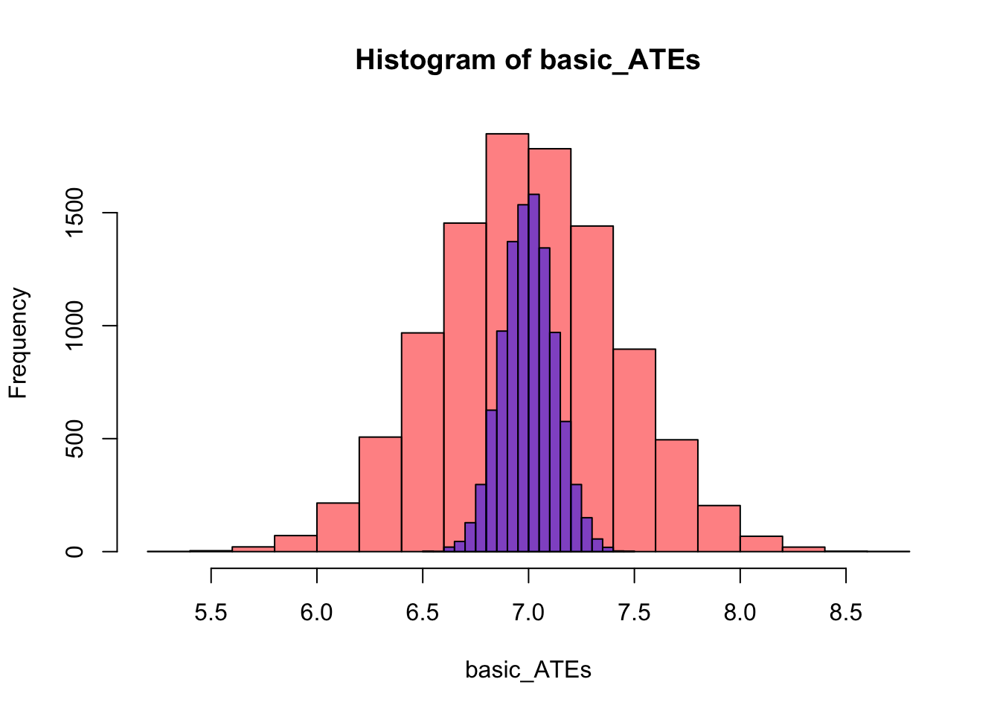

library('dplyr')4 Престратификация
4.1 Доказательство факта, что престратификация снижает дисперсию оценки
4.1.1 Условные обозначения
- \(Y\) – зависимая переменная, причем
- \(\mathbb{E}(Y)=\mu\)
- \(var(y)=\sigma^2\)
- Выборка разбита на \(k\) страт по показателю \(X\), то есть
- \(\mu_k\) – среднее в страте
- \(\sigma^2_k\) – дисперсия в страте
- \(n_k\) – численность в страты, то есть \(\sum_{k=1}^K n_k = N\)
- \(p_k = \frac{n_k}{N}\) – доля людей из \(k\)-й страты в генеральной совокупности
- \(Y_{kj}\) – метрика \(j\)-го человека из \(k\)-й страты
- Тогда среднее значение зависимой переменной
- \(\displaystyle{\bar{Y}=\frac{1}{N} \sum_{k=1}^K \sum_{j=1}^{n_k} Y_{kj}}\) обычное среднее
- \(\displaystyle{\hat{Y}_{\text{strat}}=\sum_{k=1}^K p_k \bar{Y}_k}\) среднее при стратификации
- \(\displaystyle{\bar{Y}_k=\frac{1}{n_k} \sum_{j=1}^{n_k} Y_{kj}}\) среднее значение метрики внутри \(k\)-й страты
- \(\displaystyle{\underbrace{\sum_{k=1}^K p_k \bar{Y}_k}_{\hat{Y}_{\text{strat}}} = \sum_{k=1}^K \frac{n_k}{N} \frac{1}{n_k} \sum_{j=1}^{n_k} Y_{kj} = \underbrace{\frac{1}{N} \sum_{k=1}^K \sum_{j=1}^{n_k} Y_{kj}}_{\bar{Y}}}\) обе средние равны
4.1.2 Total variance law
Это вспомогательный факт из математической статистики, который нам понадобится в дальнейших выкладках.
Доказать:
\(\displaystyle{var(Y)=var_X(\mathbb{E}(Y \mid X)) + \mathbb{E}_X(var(yX\mid X))}\)
Доказательство:
\(\displaystyle{var(Y)=\mathbb{E}\left(Y^2\right)-(E(Y))^2 =}\)
\(\displaystyle{= \left\{\text{закон повтороного мат. ожидания } \mathbb{E}(Y) = \mathbb{E}(\mathbb{E}(Y \mid X))\right\} =}\)
\(\displaystyle{=\mathbb{E}\left(\mathbb{E}\left(Y^2 \mid X\right)\right)-\mathbb{E}(\mathbb{E}(Y \mid X))]^2=}\)
\(\displaystyle{=\left\{\text{добавим и вычтем } \mathbb{E}\left[(\mathbb{E}(Y \mid X))^2 \mid X\right] \right\} =}\)
\(\displaystyle{=\underbrace{\mathbb{E}\left[\mathbb{E}\left(Y^2 \mid X\right)-(\mathbb{E}(Y \mid X))^2 \mid X\right]}_{\mathbb{E}[var(Y \mid X)]}+\underbrace{ \mathbb{E}\left[(\mathbb{E}(Y \mid X))^2 \mid X\right]-\mathbb{E}[\mathbb{E}(Y \mid X)] \mathbb{E}[\mathbb{E}(Y \mid X)]}_{var[\mathbb{E}(Y \mid X)}=}\)
\(\displaystyle{=\mathbb{E}[\operatorname{var}(Y \mid X)]+\operatorname{var}[\mathbb{E}(Y \mid X)]}\)
4.1.3 Стратификация
\(\displaystyle{\mathbb{E}\left(\hat{Y}_{\text{strat }}\right)=\mathbb{E}\left[\sum_{k=1}^K p_k \bar{Y}_k\right]=\sum_{k=1}^K p_k \mathbb{E}\left(\bar{Y}_k\right)=\sum_{k=1}^K p_k \mu_k=\boxed{\mu}}\)
\(\displaystyle{var\left(\hat{Y}_{\text{strat }}\right)=\operatorname{var}\left[\sum_{k=1}^K p_k \bar{Y}_k\right]=\sum_{k=1}^K p_k^2 var\left(\bar{Y}_k\right)=\sum_{k=1}^K \frac{n_k^2}{N^2} \frac{1}{n_k} \sigma_k^2=\boxed{\frac{1}{N} \sum_{k=1}^K p_k \sigma_k^2}}\) (1)
4.1.4 Простая рандомизация
\(\displaystyle{\mathbb{E}(\bar{Y})=\mathbb{E}\left[\frac{1}{N} \sum_{k=1}^K \sum_{j=1}^{n_k} Y_{k j}\right]=\frac{1}{N} \sum_{k=1}^K \sum_{j=1}^{n_k} \mathbb{E}\left(Y_{k j}\right)=\frac{1}{N} \sum_{k=1}^K \sum_{j=1}^{n_k} \mu=\frac{1}{N} N \mu=\boxed{\mu}}\)
\(\displaystyle{\operatorname{var}(\bar{Y})=var\left[\frac{1}{N} \sum_{k=1}^K \sum_{j=1}^{n_k} Y_{kj}\right]=\frac{1}{N^2} \sum_{k=1}^K \sum_{j=1}^{n_k} var\left(Y_{kj}\right)=\frac{N \sigma^2}{N^2}=\boxed{\frac{\sigma^2}{N}}}\) (2)
4.1.5 Итого
Пусть \(Z\) – номер страты от 1 до K. Используем total variance law, тогда:
\(\displaystyle{var(Y)=\mathbb{E}(var(Y \mid Z))+var(\mathbb{E}(Y \mid Z))=}\)
\(\displaystyle{=\mathbb{E}\left[\sum_{k=1}^K \sigma_k^2 I(Z=k)\right]+ var\left[\sum_{k=1}^K \mu_k I(Z=k)\right]=}\)
\(\displaystyle{=\sum_{k=1}^K \sigma_k^2 \mathbb{E}[I(Z=k)]+\mathbb{E}\left[\sum_{k=1}^K \mu_k I(Z=k)\right]^2-\left[\mathbb{E}\left[\sum_{k=1}^K \mu_k I(Z=k)\right]\right]^2=}\)
\(\displaystyle{= \sum_{k=1}^K \sigma_k^2 p_k + \sum_{k=1}^K \mu_k^2 p_k - \mu^2 = \{*\} = \sum_{k=1}^K \sigma_k^2 p_k + \sum_{k=1}^K p_k (\mu_k - \mu)^2}\) (3)
\(\displaystyle{(*): \sum_{k=1}^K p_k(\mu_k - \mu)^2 = \sum_{k=1}^K p_k\left(\mu_k^2 - 2\mu\mu_k + \mu^2\right) =}\)
\(\displaystyle{= \sum_{k=1}^K p_k \mu_k^2 - 2\mu \sum_{k=1}^K \mu_k p_k+ \mu^2 \sum_{k=1}^K p_k = \sum_{k=1}^K \mu_k^2 p_k - 2\mu^2 + \mu^2 =\sum_{k=1}^K \mu_k^2 p_k - \mu^2}\)
Из (2) и (3) следует:
\(\displaystyle{var(\bar{Y})=\frac{\sigma^2}{N}}\)
\(\displaystyle{var(Y)=\sum_{k=1}^K \sigma_k^2 p_k+\sum_{k=1}^K p_k\left(\mu_k-\mu\right)^2}\)
\(\displaystyle{var(\bar{Y})= \underbrace{\frac{1}{N} \sum_{k=1}^K p_k \sigma_k^2}_{\text{внутригрупповая дисперсия}} + \underbrace{\frac{1}{N} \sum_{k=1}^K p_k \left(\mu_k-\mu\right)^2}_{\text{межгрупповая дисперсия}}}\)
Из (1) следует:
\(\displaystyle{var\left(\hat{Y}_{\text{strat}}\right) = \frac{1}{N} \sum_{k=1}^K p_k \sigma_k^2}\)
Таким образом, \(\displaystyle{var(\bar{Y}) \geqslant var\left(\hat{Y}_{\text{strat }}\right)}\)
4.2 Симуляция
В данной симуляции мы попробуем эмпирически доказать, что дисперсия оценки, полученной с помощью престратификации, действительно меньше, чем при оценивании с обычной рандомизацией. Чтобы получить распределение оценок, нам нужно осуществить множество реализаций нашего эксперимента. Для этого мы воспользуемся циклами.
Для начала мы заготовим несколько функций, которые мы далее сможем использовать, чтобы наш код был более компактный. Функция generate_data будет генерить нам набор данных размером N наблюдений с параметрами ниже:
generate_data <- function(N){
N <- N
X <- runif(N, 5, 28)
e <- rnorm(N, 0, 1)
number <- 1:N
Y0 <- 10 + X + e
Y1 <- Y0 + 7
data <- data.frame(number=number, X=X, Y0=Y0, Y1=Y1)
return(data)
}Функция basic_experiment, ссылаясь на функцию generate_data, создает набор данных размером rows наблюдений, проводит на этих данных рандомизацию и считает эффект:
basic_experiment <- function(rows){
data <- generate_data(N=rows)
data$T <- rbinom(rows, 1, 0.5)
data$Y <- data$T*data$Y1 + (1-data$T)*data$Y0
mod <- lm(Y~T, data)
ATE <- summary(mod)$coefficients[2]
return(ATE)
}Функция stratification_experiment, ссылаясь на функцию generate_data, создает набор данных размером rows наблюдений, затем разбивает его на страты и внутри каждой страты проводит рандомизацию, после чего считает эффект воздействия:
stratification_experiment <- function(rows){
data <- generate_data(rows)
data <- data[order(data$X),]
trashhold <- quantile(data$X)
data$group <- cut(data$X, breaks = trashhold,
include.lowest = TRUE, labels = c(1:4))
data <- data %>%
group_by(group) %>%
mutate(1:length(X) %in% sample.int(length(X), length(X)/2))
colnames(data)[6] <- 'T'
data$T <- as.numeric(data$T)
data$Y <- data$T*data$Y1 + (1-data$T)*data$Y0
mod <- lm(Y~T, data)
ATE <- summary(mod)$coefficients[2]
return(ATE)
}Функция stratification_experiment в зависимости от аргумента type проводит симуляцию либо со стратификацией (type='strata'), либо без нее (type='basic'). Внутри каждой “ветки” с условием реализуется цикл, который N раз проводит эксперимент с помощью функции, которую мы написали ранее – basic_experiment или stratification_experiment. Каждый раз результаты эксперимента (оценка эффекта) сохраняется в вектор ATEs.
simulation <- function(N, rows, type){
if (type =='basic'){
ATEs <- c()
i=1
while (i<N+1) {
ATE <- basic_experiment(rows)
ATEs <- c(ATEs, ATE)
i=i+1
}
} else if (type =='strata'){
ATEs <- c()
i=1
while (i<N+1) {
ATE <- stratification_experiment(rows)
ATEs <- c(ATEs, ATE)
i=i+1
}
}
return(ATEs)
}Используя функцию simulation, проводим симуляцию N=10000 раз, каждый раз создавая набор данных из rows=1000 со стратификацией (type='strata') и без нее (type='basic').
stratification_ATEs <- simulation(N=10000, rows=1000, type='strata')
basic_ATEs <- simulation(N=10000, rows=1000, type='basic')Построим гистограму, которая покажет нам, как распределены оценки эффекта в зависимости от способа рандомизации.
hist(basic_ATEs, col=rgb(1, 0, 0, 0.5), freq=T)
hist(stratification_ATEs, col=rgb(0, 0, 1, 0.5), freq=T, add=T)
Наш теоретический вывод подтвердился. Действительно, дисперсия оценки, когда мы используем престратификацию, ниже, чем у обычной рандомизации.